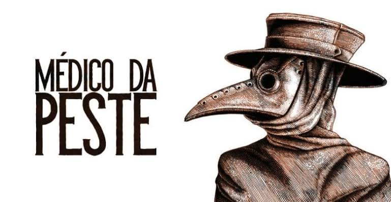

|  | Sobre | Sintomas | Tratamento |
Tratamento da Peste NegraO tratamento é feito por meio do uso de antibióticos A peste bubônica requer tratamento hospitalar urgente com antibióticos fortes. Como você pode se cuidar
HigieneHigiene pessoal que promove a saúde e o bem-estar, como lavar as mãos antes de comer.Medicamentos
AntibióticosEstão disponíveis vários antibióticos eficazes para o tratamento de peste bubónica, como a estreptomicina, gentamicina e doxiciclina. Sem tratamento, a doença causa a morte de 30% a 90% das pessoas infetadas. Nos casos em que ocorre, a morte geralmente dá-se no prazo de dez dias. |
|
Todos os direitos reservados |
|